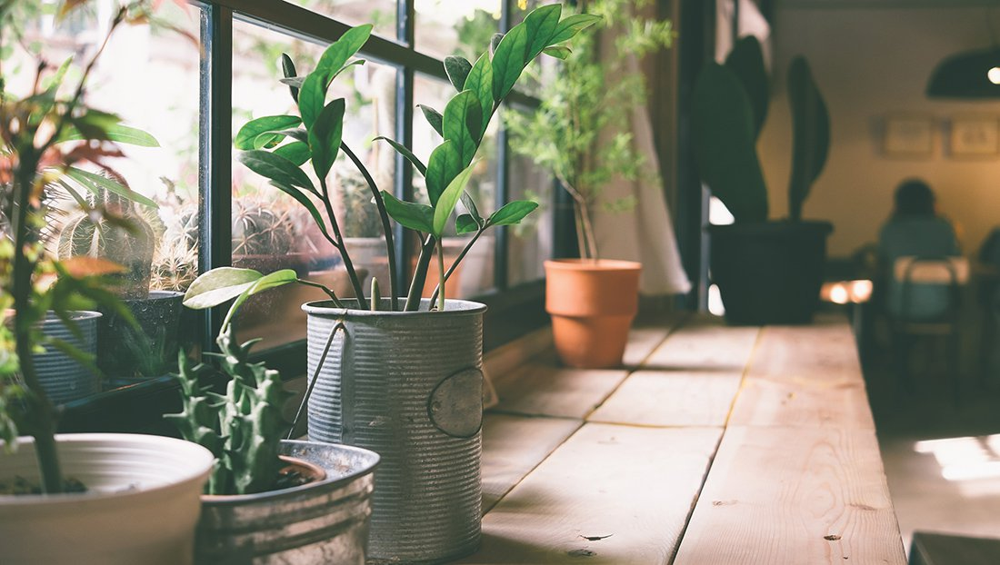
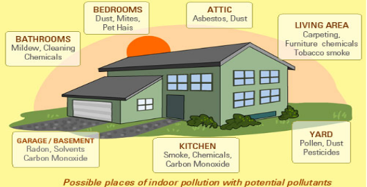

Indoor Air Pollution

Indoor air pollution: Household cleaning products, painting supplies emit toxic chemicals in the air and cause air pollution. Have you ever noticed that once you paint walls of your house, it creates some sort of smell which makes it literally impossible for you to breathe.
In the image below, as you can see, most of the parts of a house could have make air pollutions.
